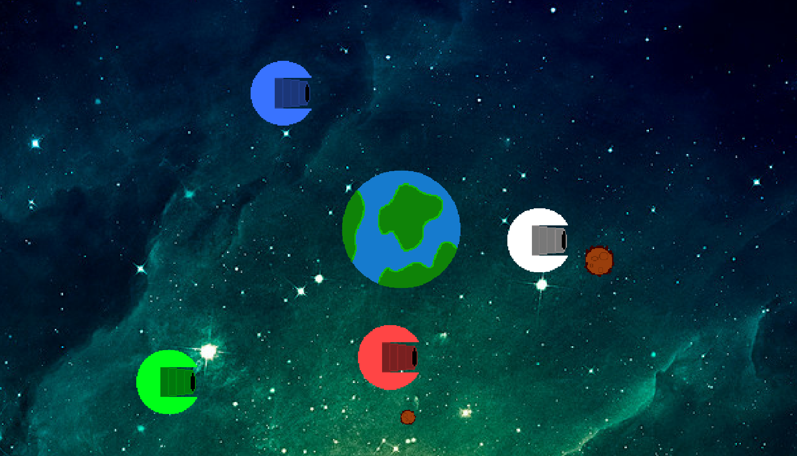
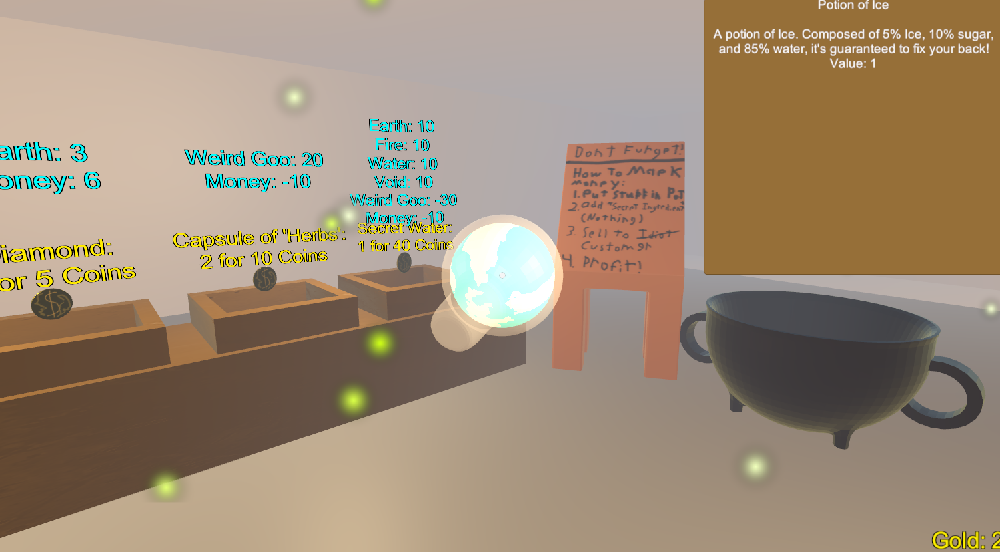
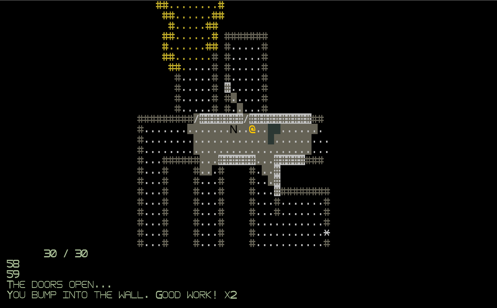
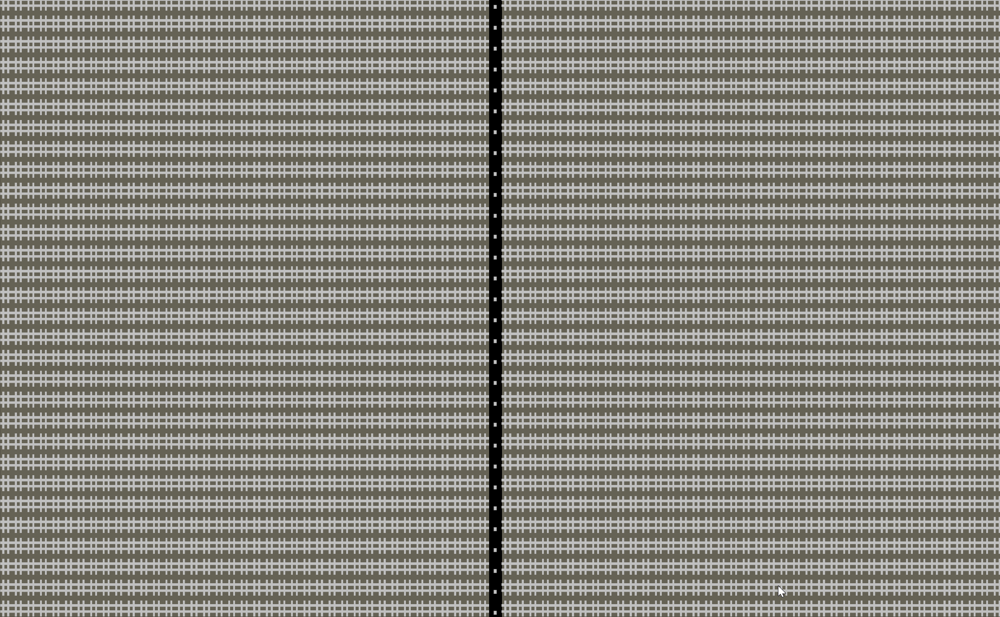
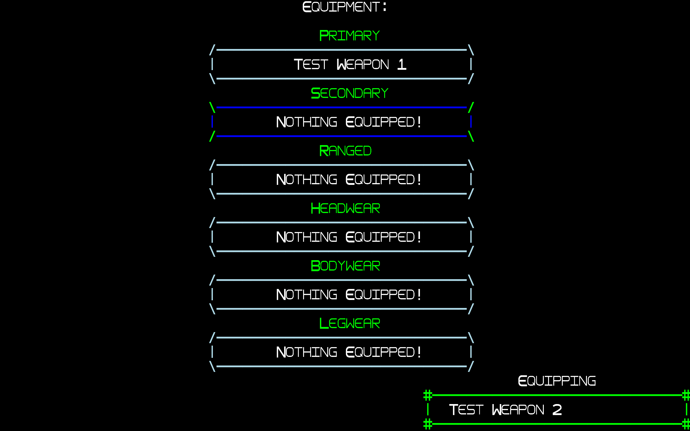

My Project Graveyard
This is my project graveyard, a place for the games I've worked on that never made it to release. Despite the various issues that these games had, I feel that many of them had interesting and unique ideas, and they all taught me important lessons. I've kept them here for posterity, and out of appreciation for the fun I've had making them.
Shooty Balls
A multiplayer, physics based game about controlling planets and shooting through gravity wells. At the end of its development, there were multiple playable characters, around 15 unique weapons, and maps with unique features (such as black holes, asteroids, and multiple planets). The game was put on hold due to schoolwork and bugs with the engine.
Lessons Learned
- Don't tie the physics to the framerate
- Manage Controller inputs very carefully
- Make rotating sprites large, so they won't change significantly when they turn
Snake Oil
A short Ludum Dare game about creating fake potions, selling them to suckers, and stealing their arms (and legs, souls, and firstborns) when they can't afford it.
Lessons Learned
- There is such a thing as too modular
- Working with a team is more effective and fun
- Keep scope small enough to avoid burnout
Home is where The Heart is

A 2D tower defense game about keeping your nosy neighbors out. You play as a demon in a very nice neighborhood, and you need to prevent people from getting into your home and seeing your giant demon heart. To do this, you harvest the souls of your neighbors and put down cursed furniture to attack trespassers.
Lessons Learned
- Making a game entirely because of a great pun is not a great idea
- Plan beforehand; Spaghetti code killed the project
- Beware of scope creep
- Leave lots of time to playtest
Roguelike Project: The Lab
  An Ascii roguelike that I worked on for about two years during highschool. The project was stopped due to college, and the difficulty of keeping the engine cohesive. The game was built in pure java using the SquidLib libarary, so the project turned out to be more of an experiment in building a roguelike engine than an actual game. Despite this, the game was nearly feature complete, and simply lacked content. Development would have continued, but the libary I was basing my display of off updated, and the update broke all of the colors and display. By the time I had brought the project back to a playable state, I was in college an unable to work on it.
Features
- Fully fleshed out level generation (using a grid-locked tunnel system for human rooms and halways, and cellular automata, perlin noise, and contour bombing for alien caves)
- Ranged and melee combat, including weapons with ammunition, throwable items with unique effects, and activatable items such as healing potions and buffs
- Inventory management and equipment that can change player stats
- Enemies with state-machine AI
- Pathfinding
- Multiple FOV controls
- Modular status effects that could be applied to any weapons and equipment
- Tile system for complex, interactable machines that exist in the level
Lessons Learned
- Game engines are difficult to make, and having a well-made engine is important for easy development
- Having a minimum viable product is more important than being feature-complete: it's better to have a fun game with few features than a very complete engine with no game